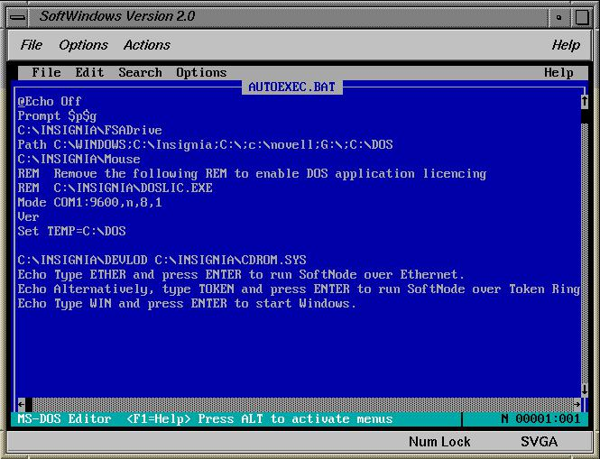

7.1.2 Dialog Berbasis Kombinasi Perintah
Dialog berbasis pemrograman merupakan ragam dialog yang memungkinkan pengguna untuk mengemas sejumlah perintah ke dalam suatu bentuk berkas yang sering disebut batch file. perintah-perintah yang dituliskan dalam ragam dialog berbasis bahasa pemrograman tidak harus menggunakan salah satu bahasa pemrograman baik aras rendah maupun aras tinggi, seperti Assembler, Pascal, C, FORTAN, atau BASIC, tetapi tetap harus mengikuti aturan-aturan tertentu.
Dalam DOS kita mengenal sejumlah perintah yang tidak ada kaitannya sama sekali dengan bahasa-bahasa pemrograman yang disebutkan diatas. Dalam DOS kita mengenal sejumlah perintah yang tidak ada kaitannya sama sekali dengan bahasa-bahasa pemrograman. Dalam DOS itu pula kita hampir selalu melihat adanya sebuah berkas yang bernama AUTOEXEC.BAT.Berkas ini sebenanrya merupakan bentuk kemasan dari sejumlah DOS.
